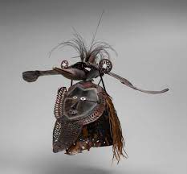

218. Buk (mask).
Torres Strait.
Mid-to-late 19th century CE
Turtle shell, wood, fiber, feathers, and shell
- Form
- Turtle shell mask
- some masks combine human and animal forms
- this mask shows a bird placed on top
- Content
- Torres Strait is the water passageway between Australia and New Guinea
- Turtle Shell masks are unique to this region
- used with grass costumes in ceremonies about :
- death
- fertility
- male initiation
- ceremonies involved
- fire, drum beats, and chanting
- recreating mythical ancestral beings
- their impact on these people in everyday activities